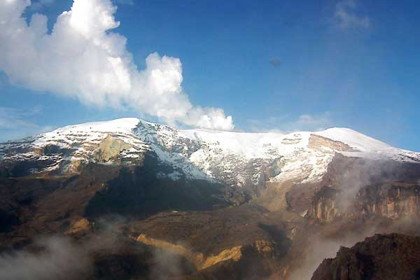

El agua es un medio vital para la estructuración ambiental y constituye además un recurso clave para el desarrollo de una nación en todos sus aspectos, siendo condicionante del progreso de la sociedad si su aprovechamiento no es promovido en una forma eficiente. El recurso hídrico representa uno de los principales y más valiosos componentes del capital natural y como tal ha sido punto de agrupación y substrato para el desarrollo social y económico. Por lo mismo, su situación actual refleja las consecuencias de un pasivo déficit de aplicación de conceptos, herramientas, técnicas, metodologías, modelos, estructuras y obras civiles, medios de planeación y gestión entre otros.
El manejo del agua actualmente se basa en conceder caudales y construir obras de ingeniería hidráulica, proyectadas en función de las necesidades propias de los distintos sectores de usuarios (Agua para consumo humano, riego, energía, recreación, industria, protección y otros) condicionadas a suplir las demandas crecientes y no al manejo integral, definiendo las ofertas y demandas del recurso, planificando el que hacer y aplicando herramientas técnicas y conceptos para el correcto aprovechamiento del agua desde su valor económico, social y ambiental.
JUSTIFICACION
El recurso hídrico día a día, es más afectado por las diferentes dinámicas antropicas que han intervenido el ciclo hidrológico, reflejándose en limitaciones sobre la disponibilidad del agua. Por lo tanto, se requiere generar capacidad a los futuros profesionales para interpretar el conjunto de dimensiones del saber entre el aspecto natural y humano, donde se amplíen conocimientos y desarrollen capacidades para resolver problemas particulares en el área de los recursos hídricos y la gestión del agua, empleando las tecnologías, modelos, conceptos e instrumentos que se requieren para llevar a cabo una gestión integrada de los recursos hídricos y superar los grandes problemas que surgen del manejo tradicional (donde la demanda esta orientada a la ejecución de obras civiles para tomar, conducir y manipular el agua) y que han llevado a la existencia de una gran presión sobre el recurso.